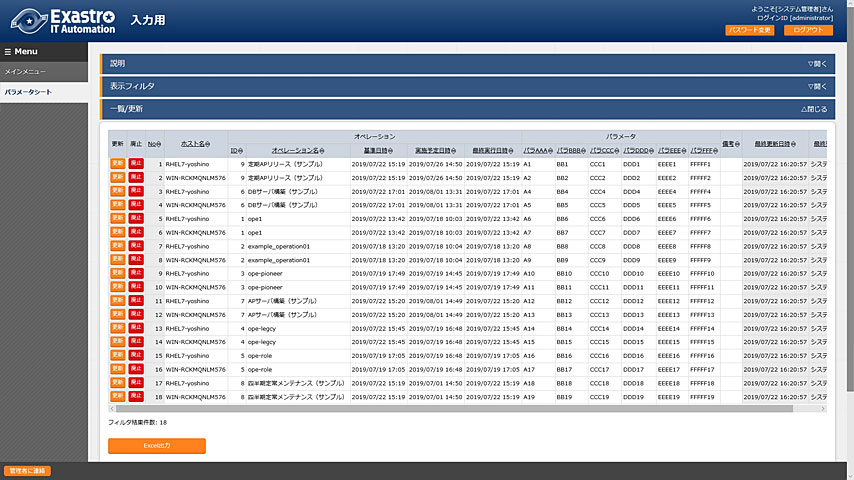
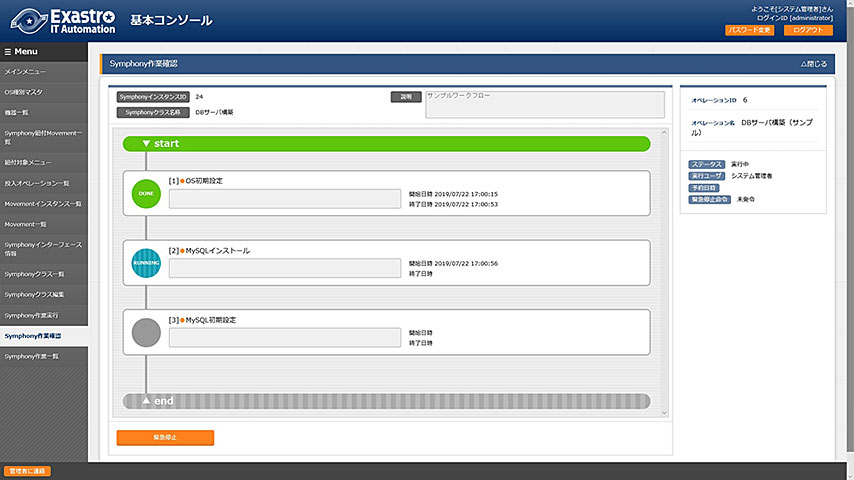
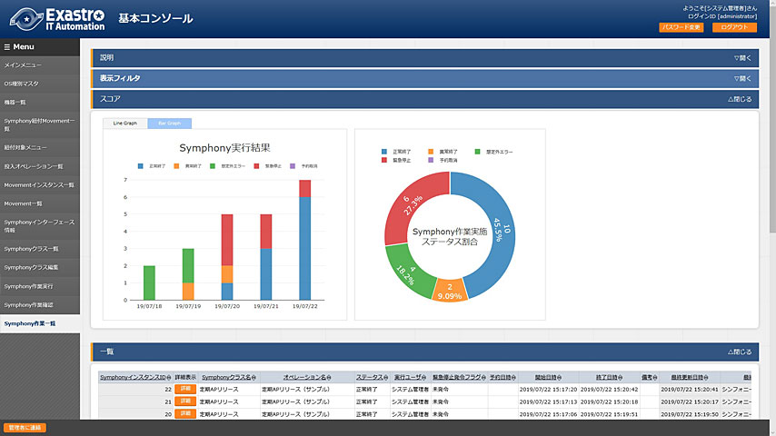

Exastro IT Automation はシステム構築を取り巻く3つの問題を解決します。
-
- データ多重管理による
設計ミス - データを一括で管理、二重管理による設計ミスを防ぎます。
- 
- データ多重管理による
-
- 複雑な人手作業による
オペレーションミス - 構築作業は自動実行、実行状況をわかりやすく表示します。
- 
- 複雑な人手作業による
-
- 作業記録不足による
障害対応遅延 - 作業記録をしっかりと管理、作業の成否をレポートします。
- 
- 作業記録不足による
Exastro IT Automation の主な特徴です。
-
- 複数のインタフェースを提供する
- 構築コードやパラメータを複数のインタフェース(Web、Excel、RestAPI)から一元管理できます。
-
- 構築コードの再利用性を高める
- 構築コードをモジュール化して再利用性を高めることができます。実行時にはそれらを繋ぎ合わせて利用します。
-
- 変数名などのタイプミスを防止する
- 構築コードを自動解析して変数名を割り出します。変数名は選択して利用するのでタイプミスは起こりません。
-
- パラメータを世代管理する
- 変数に設定するパラメータを世代管理できます。過去に設計したパラメータを検索することも可能です。
-
- 複数の自動化ソフトウェアをコントロールする
- 複数の自動化ソフトウェアをコントロールできます。自動化ソフトウェアの動作に必要なインプットデータを自動生成します。
-
- 作業をリアルタイムで監視する
- 構築コードの実行状況をリアルタイムに監視できます。また、実行ログを収集し、実行の成否をレポートします。